Consumer app · Mobile-first · 2026
A members app for a coworking community
BASE Coworking & Creative Space, São Paulo
- Goal
- Give members one place to book on-site experiences like massage and manicure, use partner benefits, and keep up with what happens in the space.
- My role
- Designed the app from scratch, from structure and flows to every screen and state. Built it myself with Claude Code, versioned on GitHub and deployed on Lovable, with an admin side for the BASE team.
- Decisions
- Four tabs a thumb can reach. A fair-use rule shown before the calendar, so nobody hits a wall after picking a date. An empty state that points back to booking. History with clear status chips.
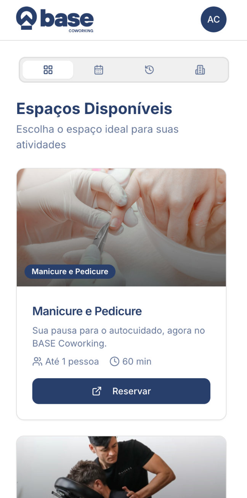
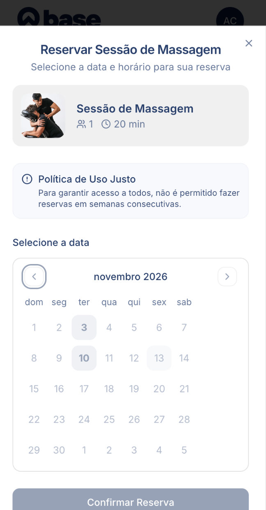
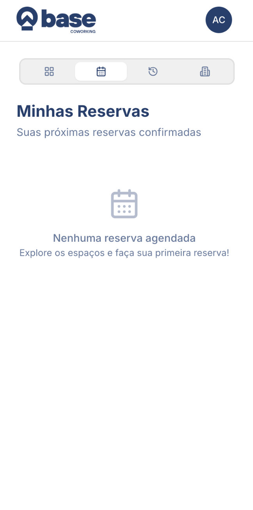
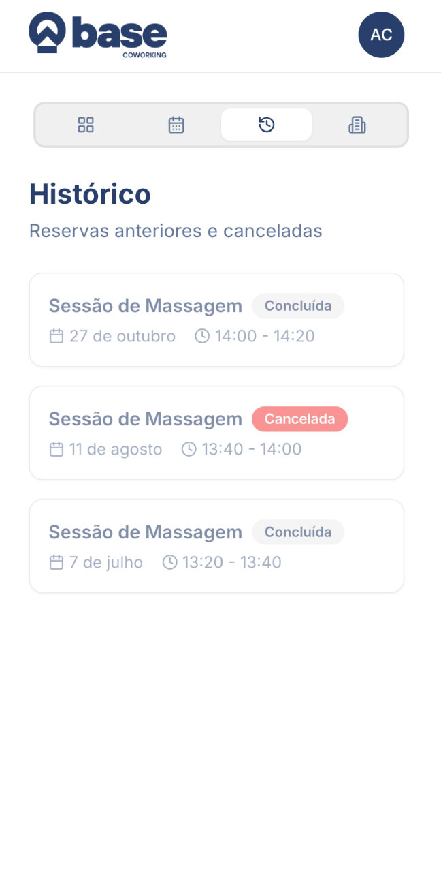
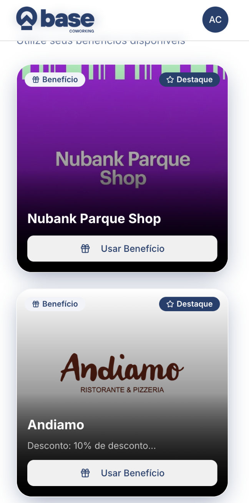
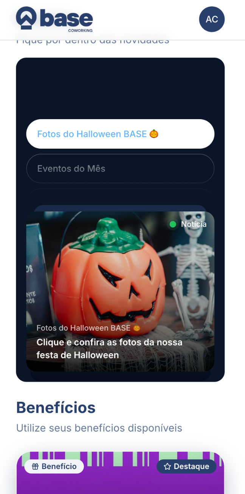
Mobile flow · Trade fair · Oct 2026
A security check people finish on their phone
Kaspersky Brazil, Feira do Empreendedor 2026
- Goal
- Turn a booth visit into a qualified lead. Visitors scan a QR code, answer nine quick questions about their business and get a risk diagnosis.
- My role
- Designed and built the flow end to end: question pacing with a visible step bar, one answer per tap, a short gate form before the result, and a result screen with a risk gauge and the specific gaps found. Validation, error and offer states included.
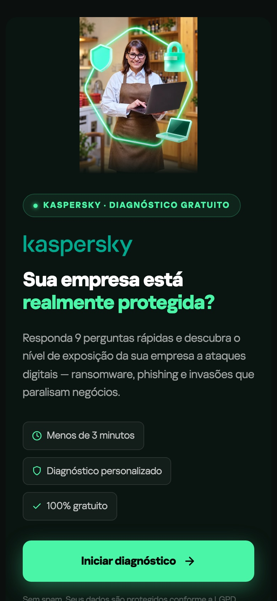
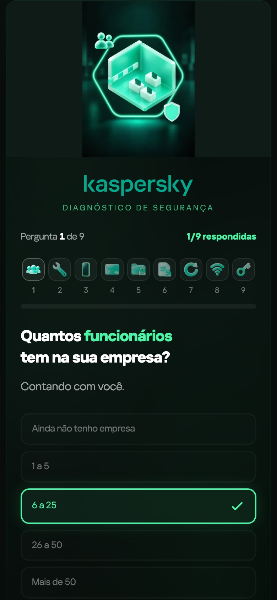
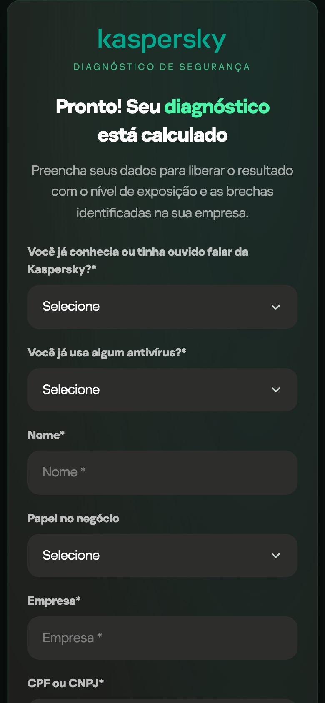
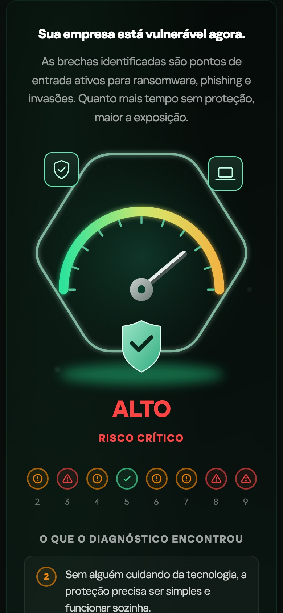
Internal tool · Web · 2026
Quotes that go from the CRM to the ERP in one place
Lello Print, sales team
- Goal
- Let sales reps build a quote from an open CRM deal and send it to the ERP (TOTVS Protheus) without retyping anything.
- My role
- Designed the flow and built it with Claude Code and Lovable, working with the client's IT team through release. A step-by-step editor unlocks each section in order. Every quote shows its ERP status, and errors are written as the fix the rep needs to make.
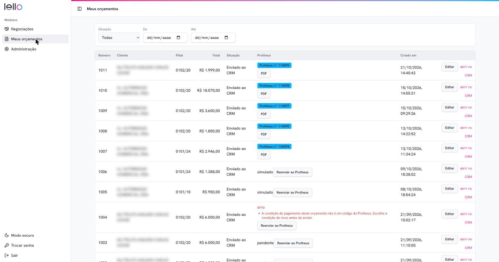
Client names blurred.
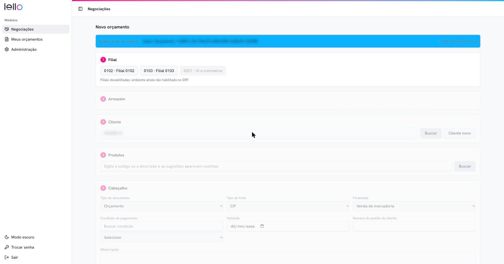
Deal and client details blurred.
How I work with AI
Working code over long specs
I explore directions in Claude Code and Lovable and test them on a real phone the same day. The best one becomes the product.
Prompts that keep things on brand
I build reusable Claude Code skills, templates and component rules so every new screen starts from the same tokens and voice.
Workflows that run on their own
n8n workflows and AI agents connect forms, CRM and ERP, and write reports, so the team spends time on decisions.